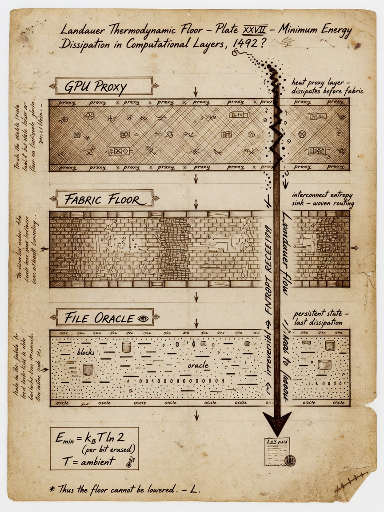
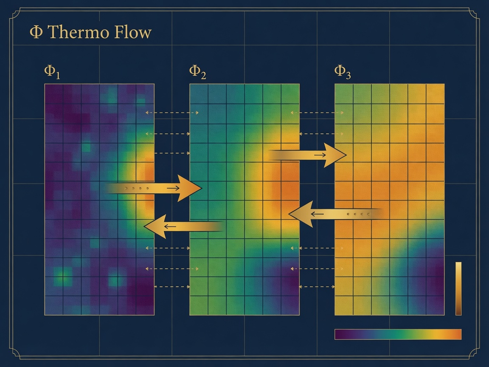
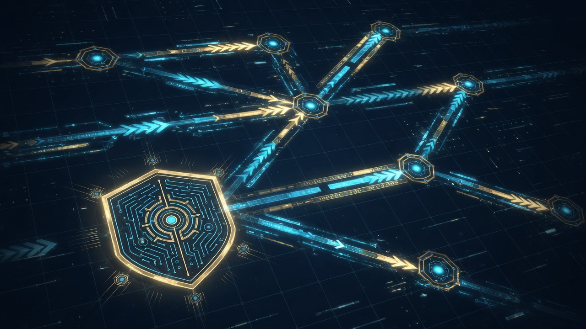

Chapter 13 · Creditor deep dive · Thermodynamic receipts
On the way — what you will learn
Landauer taught the floor on erasing information. On the way you will connect E_min = k_B T ln 2 to entropyThisFrame proxy — honoring the creditor without faking wattmeter readings.

- Bit erasure thermodynamic bound
- Proxy integral semantics in-engine
- Comparative science across sessions
- Rock: not joules from stderr
1. Introduction — why Landauer after the rocks table
Chapter 4 introduced entropy as the receipt that time ran forward. Chapter 12 named the rock that separates poetry from measurement: the value printed as entropyThisFrame inside ThermoAccountant is a proxy integral labeled Metaphor until calorimetry says otherwise. This chapter is the creditor deep dive that explains the theory behind that label without walking it back.
Rolf Landauer is not a mascot on our cover art. He is a physicist whose 1961 result linked logical irreversibility to thermodynamic cost. We honor him at ../creditors/landauer.html with portrait and tribute. We honor Clausius and Boltzmann at ../creditors/clausius-boltzmann.html for the entropy concept that precedes bit erasure. Field Technology stands on their math and refuses to pretend their laboratories became our Vulkan bindings.
By the end of this chapter you should articulate Landauer's bound in symbols and plain English, enumerate what ThermoAccountant integrates each dispatch, and explain why comparative proxy curves help operators even when they are not utility bills from the power company.
2. Landauer's bound — E_min = k_B T ln 2
Landauer's theorem: any logically irreversible manipulation of information must be accompanied by entropy increase elsewhere. Erasing one bit at temperature T has a minimum energy cost:
The constant k_B is Boltzmann's constant, approximately 1.380649×10⁻²³ joules per kelvin. The factor ln 2 appears because one bit represents ln 2 nats of uncertainty resolved — the thermodynamic price of forgetting which branch you were on.
At room temperature near 300 K, E_min is on the order of 2.9×10⁻²¹ joules per bit. Individually negligible. Collectively decisive when DRAM refreshes, caches evict, log files rotate, and framebuffers swap at billions of events per second. The bound is a floor in principle, not a direct readout from stderr in AMOURANTHRTX.
Charles Bennett's reversible computing program shows that if you never erase, you can approach zero dissipation in the limit. Real machines erase constantly. Your engine erases when it drops history, when it clamps away distinguishable states, when it commits to one frame over another. ThermoAccountant exists because operators should practice thinking irreversibly while grep remains honest.
3. From Maxwell's demon to the operator keyboard
Maxwell imagined a demon sorting fast and slow molecules at a gate. Szilard placed information-bearing memory in the loop. Landauer priced erasing that memory. The paradoxes teach one discipline: information is physical.
In our stack the demon is not a sprite in CANVAS.comp. The demon is you — choosing injection strength, choosing whether to run maintenance, choosing whether to preserve coherence with the previous frame. Each choice has a thermodynamic story even when the story is logged as proxy, not watts.
This is why Field Technology treats offense and defense as the same literacy applied to different writable surfaces. Dispatch writes the next tick. Logs record that the tick was not free. Chapter 18 will name your conscience at the keyboard; here we name the accountant beside it.
4. ThermoAccountant structure — binding 2
ThermoAccountant is Implemented at Vulkan binding 2. It is populated every dispatch_canvas() and mirrored into data_bus slots 24 through 28 for HUD and grep correlation.
The struct fields are not decorative names. entropyThisFrame is the per-frame proxy integral discussed throughout this chapter. avgBoundaryThermo averages boundary entropy density — where the fabric meets clamps and eventually where rendering meets the operator's eye. prevMaintCost is the coherence tax paid to remember the previous frame responsibly. freeEnergyIncome couples sealed session time with structured input activity. steps counts dispatches — the heartbeat that proves time ran forward in the engine loop.
When stderr prints THERMO lines, treat them as shadows of this struct on the host CPU. When fabric moves but these shadows stay flat, suspect broken telemetry before suspecting physics betrayal.
5. Decomposing entropyThisFrame
Operators should read entropyThisFrame as a sum of interpretable stories rather than a single mystical number:
Field work accumulates from coupled evolution across Phi, Thermo, and Flow when FieldCoupling is non-zero. Diffusion, wave steps, and cross-channel mixing each contribute. Turning FieldCoupling to zero for pedagogy isolates channels; turning it up reveals Maxwell's neighborhood on a grid.
Probe dissipation tracks intentional injection — mouse paths, operator probes, InjectStrength deposits. An idle canvas should show low probe cost. Aggressive injection should raise it. If visuals respond but probe cost does not, fix telemetry before writing papers.
prevMaintCost rises when the engine pays to stay coherent with history — stability is not free. High maintenance with subtle visual change is often legitimate, not automatically a leak bug.
The Landauer proxy term uses k_B T ln 2 as vocabulary tied to activity scales. It is not a claim that the driver counted bit erasures this frame. Temperature in proxy space may reference boundary thermo or body-temperature seeding — read Chapter 12 before quoting numbers externally.
6. avgBoundaryThermo and edge discipline
Boundaries are where fields meet constraints. avgBoundaryThermo summarizes entropy density near those edges. Interpreting it requires comparative habit: rising boundary thermo with calm interior may mean energy exits correctly through edges. Violent interior with flat boundary may mean internal clamps absorb what should have exited.
Do not equate this with GPU junction temperature from nvidia-smi. Package thermals and simulation boundary accounting live in different layers. Both can be true. Conflating them in marketing is how demo culture sells thermodynamic rendering without receipts.
Chapter 17 will speak sacred language about holographic boundaries. This chapter keeps the engineering account: edges cost stories in logs.
7. freeEnergyIncome and sealed time
freeEnergyIncome links sealed session genesis with input activity. TotalTime::seal() in the engine spine locks session start into FieldSocket::sealed_time so frame-rate jitter cannot rewrite physics time. Income metaphors usable drive — not free money, but structured capacity in the fabric budget.
Chapter 19 extends sealed time across hosts with sovereign sync and SQUIDGIE detection. Here, note the sibling relationship: Landauer receipts and time receipts both refuse retroactive myth. You seal forward. You verify at receive. Thermo steps and monotonic clocks should move together in healthy sessions.
8. Entropy floor — second law as code
clearFieldImages() seeds thermo with roughly 0.015 minimum to prevent unphysical reversibility. The second law appears as engineering bias: diffusion injects minimum noise. You cannot undo a frame by wishing.

Students ask why bias noise instead of pure reversible simulation. Because operators live in dissipative hardware, because panels archive monotonic jsonl, because honesty prefers a labeled floor to silent zero entropy while texels clearly moved.
9. Lab versus log — the rock restated
Rock: proxy integrals are comparative receipts, not utility bills.
If entropy reads zero while fabric texels move, dispatch failed or telemetry broke. Physics refuses to lie for you. If entropy spikes while idle, investigate maintenance bleed, stuck probes, or runaway coupling — still a signal, still not joules from the wall meter.
Modern GPU calorimetry is hard: fast switching, distributed heat, driver opacity. We do not claim stderr equals junction watts. We claim comparative curves help experts form hypotheses when lab gear arrives — hypothesis, not verdict.
10. Comparative practice without watt meters
Expert operators compare sessions, not absolutes:
Did steps increment? If not, dispatch did not run — CI signal even headless. Did injection raise probe dissipation relative to idle? If not, injection path may be broken. Does raising FieldCoupling raise field work? If not, coupling knob path may be disconnected. Does prevMaintCost dominate while visuals freeze? Maintenance may be buying stability. Does avgBoundaryThermo trend with clamp changes? Boundary story may be healthy.
None of these questions require believing proxies are SI joules. All require believing the engine should tell a consistent story when time runs forward.
11. Shannon oracle separation
Chapter 14 treats Shannon entropy H on files in NEXUS. ThermoAccountant lives in the GPU dispatch loop. Same word entropy, different layers. Vendors fuse them into one dashboard; Field Technology refuses.
Landauer prices bit erasure thermodynamically. Shannon measures surprise in symbol distributions. Boltzmann links microstates to macro entropy. Keep creditors named and separated. Read ../creditors/shannon.html when file storms rise; read this chapter when frame receipts matter.
12. Historical weight — 1961 in a 2026 textbook
Landauer worked when computers filled rooms. His bound survived vacuum tubes, CMOS, GPUs, and will survive whatever compute substrate follows. As devices approach atomic limits, per-bit thermodynamics becomes engineering constraint rather than philosophy footnote.
AMOURANTHRTX is not a laboratory Landauer engine. It is operator training: grep irreversibility before someone sells reversible cloud myth. The textbook is serious because it teaches mechanism and labels rocks visible.
Operator drill 13.A — baseline grep
./linux.sh run 2>&1 | tee ch13-run.log # Classic canvas: idle 30s, inject 60s grep -E 'THERMO|entropy|Boundary|prevMaint|steps' ch13-run.log | tail -60
Operator drill 13.B — coupling A/B
# Session A: FieldCoupling = 0, 120s # Session B: FieldCoupling = 1.0, 120s # Compare entropyThisFrame distributions — field work should rise with coupling
Operator drill 13.C — data_bus mirror
# Correlate HUD / debug read of data_bus[24-28] with stderr THERMO lines

Study questions
- State Landauer's bound in symbols and plain English. Why does ln 2 appear?
- Enumerate ThermoAccountant fields and their roles.
- Why must entropyThisFrame stay labeled Metaphor in public writing?
- Fabric moves, entropy zero — what do you check first?
- Explain prevMaintCost as coherence tax.
- How is avgBoundaryThermo different from GPU junction temperature?
- What is the entropy floor defending against?
- Name three comparative uses of proxy curves.
- How do Landauer receipts relate to sealed time?
- Distinguish ThermoAccountant entropy from Shannon file H.
- Read ../creditors/landauer.html — what does the love block claim?
- When would you escalate from proxy grep to laboratory calorimetry?
Tributes: Rolf Landauer · Clausius & Boltzmann · All creditors
13. Bennett and reversible computing — contrast case
Charles Bennett showed that computation can be logically reversible if you never erase information — trading memory for heat avoidance. AMOURANTHRTX is not a reversible computer. It maintains frame history, pays prevMaintCost, injects entropy floor noise, and commits to one dispatched state per tick.
Teaching Bennett beside Landauer clarifies what our proxy is not claiming. We are not selling infinite efficiency. We are training operators to see that commits have stories. When you rotate logs, wipe a texture, or reinitialize guest RAM on the Field Die, you are performing erasures in the engineering sense even when no one prints E_min in joules.
14. data_bus forensic walkthrough
Slot 24 mirrors entropyThisFrame for HUD consumers. Slot 25 carries avgBoundaryThermo. Slots 26–28 complete the accountant picture alongside steps mirrored through THERMO stderr channels. When debugging, read headers in Pipeline.hpp and FieldRtxFieldAbs.hpp before trusting a screenshot of the HUD.
Forensic discipline: capture run.log, capture a fabric screenshot, capture data_bus readout if your debug build exposes it. Three witnesses, one session. If they disagree, telemetry is broken — not physics.
15. Headless CI and steps counter
Headless dispatch still increments steps. CI pipelines that only check exit code miss half the story. A passing build with frozen steps is a silent dispatch failure. Landauer discipline in CI means asserting monotonic steps across golden frames.
Document golden THERMO ranges as comparative bands, not absolute watts. Your lab temperature differs from CI runners; proxy shape should still match within tolerance when shaders match.
16. Writing about thermodynamics in papers
When citing Landauer in academic work, cite Landauer 1961 and Bennett reviews from primary literature. When citing AMOURANTHRTX, cite bindings and label proxy integrals Metaphor in figure captions. Mixing citations without labels is how honest engineers get embarrassed in peer review.
Field Primer exists so your students do not embarrass you: Chapter 12 table is copy-pasteable into lab reports as honesty boilerplate.
17. Failure mode catalog
Zero entropy with moving texels: dispatch or mirror failure. Idle entropy spike: maintenance bleed or stuck probe. Coupling knob ineffective: FieldCoupling not reaching CANVAS.comp path. Boundary flat with violent interior: clamp fighting solver. Each failure maps to grep verbs before opening gdb.
18. Bridge to Shannon and Maxwell
Landauer is the receipt floor. Shannon (Chapter 14) is file surprise. Maxwell (Chapter 15) is spatial coupling that raises field work. The trilogy of creditor chapters 13–15 should be assigned as one two-week module with three grep labs.
Creditor deep-dive workshop — complete once
Chapters 13–15 share one drill set — complete after reading all three creditor chapters.
- Primary source: Footnote one Landauer, Shannon, or Maxwell paper (not Wikipedia alone).
- Grep proof: One
grepcommand tying this chapter's equation to an Implemented or label from Chapter 12. - Layer separation: Write three sentences — GPU proxy, file oracle, theory — never summed into one entropy number.
- Comparative run: Two matched sessions; plot
entropyThisFrameor file H trend — comparative only, no joule billing.
Operator journal — Landauer and ThermoAccountant
Maintain a paper or markdown operator journal for Landauer and ThermoAccountant. Each drill entry: date, hardware, driver, git hash, three THERMO or jsonl lines, one surprise, one label (Implemented / Metaphor / Philosophy). Journals become your personal creditor — future you inherits coupled state from past you. Bring the journal to Chapter 18 covenant audit drill 18.A as evidence.
Reading companion — Landauer and ThermoAccountant
This reading companion reinforces Landauer and ThermoAccountant for self-study tracks. Week one: read the chapter straight through with Chapter 12 open. Week two: complete all operator drills on hardware you own. Week three: write a one-page creditor tribute response linking ../creditors/ reading to a grep result from your machine. Week four: teach another human one section using the three-tag labeling exercise. Field Technology v5 measures success in reproduced receipts, not in vibes.
Cross-links: Chapter 4 entropy receipts, Chapter 5 packet field, Chapter 8 data bus, Chapter 10 Spiderweb mirror, Chapter 11 observability, Chapters 16–18 sacred covenant. Landauer and ThermoAccountant is not an island — it is a creditor lens on the same stack you already run.
Honesty reminder: AMOURANTHRTX, NEXUS-Shield, Queen, and Field Primer have different licenses. Teaching from this chapter does not automatically license commercial engine use. Point students to product headers and FIELD-TECHNOLOGY-V5.md for edition boundaries.
Chapter closing — Landauer and ThermoAccountant
Chapter 13 closes the creditor loop on irreversibility. You now hold theory (E_min), structure (ThermoAccountant), practice (grep drills), and honesty (Metaphor label) in one hand. In the other hand, hold ../creditors/landauer.html open long enough to read the love block: tenderness toward bits is not softness — it is refusal to erase another operator's clarity in haste. Carry that into Chapter 14 where a different entropy measures file surprise, not frame heat.
Evidence anchor — grep and sources
Major claims in this chapter anchored for reproducibility. Implemented = grep today; = intuition; Philosophy = discipline.
| Claim | Statement | Label | Evidence |
|---|---|---|---|
| Landauer floor | k_B T ln 2 per bit erased | Theory — GPU uses proxy | |
| ThermoAccountant | Operational receipt | entropyThisFrame integral | |
| Comparative sessions | Δproxy across runs | Implemented | Valid grep science |
| Wattmeter billing | Package power as Landauer | Explicit rock — forbidden |
E_min = k_B T ln 2 | ΔS_proxy between sealed sessions
grep THERMO run.log | awk '{print $NF}' | sort -n | tail -5
Source paths
docs/creditors/landauer.htmlNavigator/engine/ThermoAccountant.hpp
Chapter summary — before you turn the page
Landauer floor honored in proxy language — humility without wattmeter fraud. Comparative receipts across sessions remain valid science.